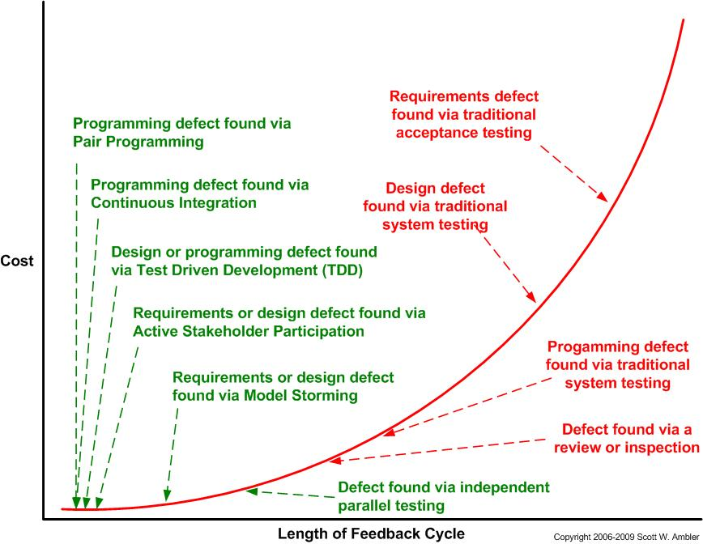
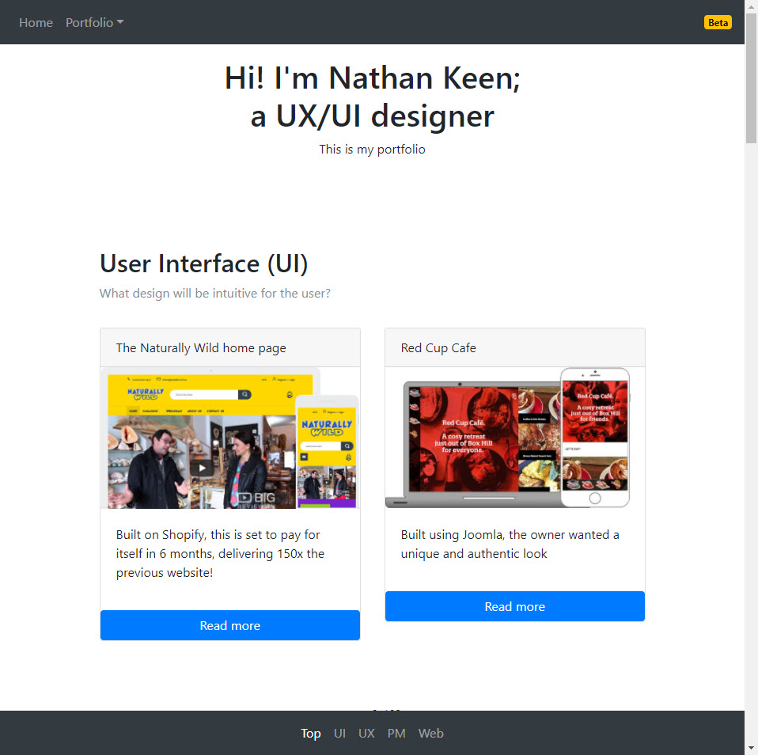
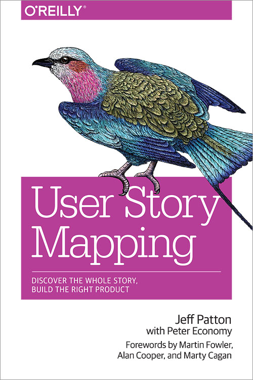

<!DOCTYPE html><html><head><title>Portfolio of Nathan Keen</title><meta charset="utf-8"><meta name="viewport" content="width=device-width, initial-scale=1, shrink-to-fit=no"><link rel="apple-touch-icon" sizes="180x180" href="/apple-touch-icon.png"><link rel="icon" type="image/png" sizes="32x32" href="/favicon-32x32.png"><link rel="icon" type="image/png" sizes="16x16" href="/favicon-16x16.png"><link rel="manifest" href="/manifest.json"><link rel="mask-icon" href="/safari-pinned-tab.svg" color="#5bbad5"><meta property="og:title" content="Nathan Keen's Portfolio"><meta property="og:image" content="images/logo-NK-1xxhdpi.png"><meta property="og:description" content="UX/UI web designer"><meta property="og:url" content="www.nathankeen.id.au"><meta name="theme-color" content="#ffffff"><link rel="stylesheet" href="https://maxcdn.bootstrapcdn.com/bootstrap/4.0.0-beta.2/css/bootstrap.min.css" integrity="sha384-PsH8R72JQ3SOdhVi3uxftmaW6Vc51MKb0q5P2rRUpPvrszuE4W1povHYgTpBfshb" crossorigin="anonymous"><link rel="stylesheet" href="css/fontawesome.css"><link rel="stylesheet" href="css/layout.css"></head></html><body id="top" data-spy="scroll" data-target="#navbot" data-offset="0"> <div class="container"><header><h1>The Agile plan for this portfolio site</h1></header><section><div class="row vertcentre"><div class="col-md-6"><h2 class="anchor" id="Plan">The plan</h2><p class="text-muted"></p><p>I'll admit it. I haven't had formal agile experience. Yet, because of my strong project management training (in Civil Engineering study + practice), and innate organisational ability, I'm a natural at it.</p><p>While most projects I've done have been more or less building websites, rather than ever-expanding SaaS products, I've been able to follow an Agile/Lean methodology for this portfolio. </p><p>One of the great things about an Agile method is that you can better manage timeframes by building the core functions first, and then having the option to defer 'nice-to-have' features later.</p><p>Of course, getting early feedback is a very nice thing too. As we learned in Civil Engineering, the later the changes, the more expensive they are.</p></div><div class="col-md-6"><figure><figcaption class="figure-caption text-center">Agile (in green) finds problems much faster than traditional methods (in red), and is therefore cheaper and faster</figcaption></figure></div></div></section><div class="row justify-content-center"><div class="col-md-10 col-xl-8"><h4>1st iteration: The minimum viable product</h4><p>I wanted a new portfolio up that displayed my latest projects. This would be to communicate to prospective employees my work.</p><p>So, minimally, I had to have a writeup on these projects. </p><p>I needed to learn Bootstrap better, so decided to use that framework instead of WordPress, Joomla or another CMS. </p><p>I mapped out some basic content needs for the first iteration, such as a brief description of skills, and the main UX/UI piece: Red Cup Cafe. I would leave colour schemes and design to a later iteration.</p><p>To do this, I've used Prepros.io which is installable on Windows/Mac and does all the Node.js npm goodness for you, in terms of preprocessing for SASS, Pug (Jade), and managing live browser updates when you save, and FTP.</p><p>I whacked a <span class="badge badge-warning">Beta</span> badge on it, and uploaded it.</p><figure><figcaption class="figure-caption text-center">First version complete!</figcaption></figure><h4>2nd iteration: Content, content, content</h4><p>I had thought to do design work at this stage ("I really need to WOW hiring managers!"), but I needed more core content first:</p><ul><li>The Naturally Wild IA process</li><li>My work experience history</li></ul><p>I'm not yet finished this stage</p><h4>3rd iteration: Design</h4><p>Grey is not great, so I am planning to work on the design in this stage.</p><p>But it's clearly less important because my design skills can be clearly seen on the sites that I've shown already.</p><h4>4th iteration: Animation</h4><p>I'd like to test and grow my CSS/JS animation skills, and build on the theming of the design work.</p><p>This is really about growing my skills, and has to be built after the core design strategy and theme has been mapped.</p></div></div><section><div class="row vertcentre"><div class="col-md-6"><h2 class="anchor" id="Learning">Learning</h2><p class="text-muted"></p><p>I've been reading 'User Story Mapping: discover the whole story, build the right product' by Jeff Patton (O'Reilly books). </p><p>I think overall his insights and the process is solid. </p><p>I'm wondering though, whether the innovation here was:</p><ul><li>A new visual style of project management, i.e. sticky note style instead of lists?</li><li>New names for the same things, i.e. stories for functions; story maps for gantt charts, iterations/sprints for milestones?</li><li>A new focus on users rather than functions, i.e. flipping the task list to across the page and highlighting the user stories?</li><li>Or that simply he was the first to collate all of these things (i.e. they don't really seem that different to other project management techniques)?</li></ul><p>Regardless of Patton's contribution (much or little), the process has these advantages and disadvantages:</p><ul><li>It makes project management sexy again, and planning like this makes better products</li><li>More people are visual learners than word-based learners, so the message can get across better</li><li>Managing visually is easier than with text, and naturally involves more people, especially if done physically on a big wall</li><li>The naming is probably from the wider Agile movement, and is annoying, but inconsequential (story map? Okay, gantt chart is pretty bad too)</li><li>The focus on user stories is demonstrably better than focussing on abstract functions, but there's no reason we couldn't move back the terminology from 'epics' to 'milestones', and 'user stories' to 'functions' - provided we add the structural elements of 'who' and 'why'. That seems to me to be more meaningful than fancy names that have to be relearned.</li></ul><p>As Patton says, the main goal is shared learning, not getting the technique correct. I'd say, well done! Visual communication pretty much always beats text-based communication for learning, so visualising project management like this is wonderful.</p><p>However, the core disadvantage of this method is the inefficiency compared to writing it out. Visual methods are always a bit slower. But this is mitigated somewhat by software such as Mural.ly and sticky note style interfaces which have the building blocks ready for you to efficiently map.</p></div><div class="col-md-6"><figure><figcaption class="figure-caption text-center"></figcaption></figure></div></div></section></div><nav class="navbar navbar-expand navbar-dark fixed-top bg-dark" id="navtop"><button class="navbar-toggler" type="button" data-toggle="collapse" data-target="#navbarCollapse" aria-controls="navbarCollapse" aria-expanded="false" aria-label="Toggle navigation"><span class="navbar-toggler-icon"></span></button><div class="collapse navbar-collapse" id="navbarCollapse"><ul class="navbar-nav mr-auto"><li class="nav-item"><a class="nav-link" href="/">Home</a></li><li class="nav-item dropdown"><a class="nav-link dropdown-toggle" href="#" id="dropup2" data-toggle="dropdown" aria-haspopup="true" aria-expanded="false">Portfolio</a><div class="dropdown-menu" aria-labelledby="dropup2"><a class="dropdown-item" href="/portfolio-RedCupCafe2017.html">Red Cup Cafe 2017</a><a class="dropdown-item" href="/portfolio-NatWild2017.html">Naturally Wild 2017</a><a class="dropdown-item" href="/portfolio-InformationArchitecture.html">Information Architecture</a><a class="dropdown-item" href="/portfolio-2018.html">Portfolio 2018</a></div></li><li class="nav-item"><a class="nav-link" href="/work-experience.html">Work XP</a></li></ul><span class="badge badge-warning">Beta</span></div></nav><footer class="bg-info text-white"><div class="container"><div class="jumbotron"><div class="row"><div class="col-sm-6"><ul class="nav flex-column"><h4>Websites currently online</h4><p>Please just email me for the passwords if they're still offline</p><li class="nav-item"><a class="nav-link" href="http://redcup.com.au">Red Cup Cafe</a></li><p style="margin:1rem 0 0 0;">~1,000 product websites, on Shopify:</p><li class="nav-item"><a class="nav-link" href="https://natwild.com.au">Naturally Wild</a></li><li class="nav-item"><a class="nav-link" href="https://filipinofoodwholesale.com.au">Philworld Trading Pty Ltd</a></li></ul></div><div class="col-sm-6"><h4>Contact Nathan</h4><p>Phone: <a href="tel:+61405990801">0405 990 801</a></p><p>Email: <a href="javascript:location='mailto:\u006e\u0061\u0074\u0068\u0061\u006e\u002e\u006b\u0031\u0040\u0067\u006d\u0061\u0069\u006c\u002e\u0063\u006f\u006d';void 0"><script type="text/javascript">document.write('\u006e\u0061\u0074\u0068\u0061\u006e\u002e\u006b\u0031\u0040\u0067\u006d\u0061\u0069\u006c\u002e\u0063\u006f\u006d')</script></a></p><p>LinkedIn: <a href="https://www.linkedin.com/in/nathankeenmelbourne/">linkedin.com/in/nathankeenmelbourne/</a></p></div></div></div></div></footer><script src="https://ajax.googleapis.com/ajax/libs/jquery/3.2.1/jquery.min.js"></script><script src="https://cdnjs.cloudflare.com/ajax/libs/popper.js/1.12.9/umd/popper.min.js" integrity="sha384-ApNbgh9B+Y1QKtv3Rn7W3mgPxhU9K/ScQsAP7hUibX39j7fakFPskvXusvfa0b4Q" crossorigin="anonymous"></script><script src="https://maxcdn.bootstrapcdn.com/bootstrap/4.0.0-beta.2/js/bootstrap.min.js" integrity="sha384-alpBpkh1PFOepccYVYDB4do5UnbKysX5WZXm3XxPqe5iKTfUKjNkCk9SaVuEZflJ" crossorigin="anonymous"></script><script src="/js/custom.js"></script></body>